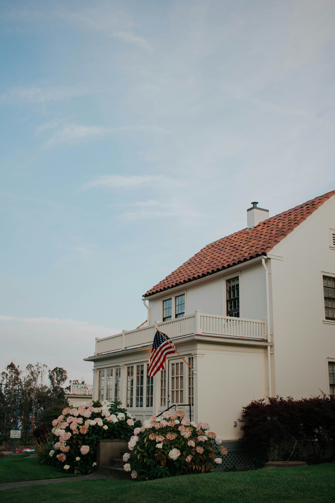

01
Abraham Lincoln
named by 46%
A landmark survey of American opinion at 250 years — pride, democracy, the dream, and what comes next.
Navigator surveyed 2,059 Americans and held four focus groups to learn about American opinion at 250 years — on pride, the flag, democracy, the American dream, and what comes next.Two hundred and fifty years after the Declaration of Independence, Americans still hold strong opinions about their country and about each other.
Navigator Research surveyed 2,059 Americans from May 27th to June 1, 2026 to measure how the country sees itself at this milestone. Results are weighted to be representative of the national registered voter population.
of Americans say the country is on the wrong track
1 in 3 think in 250 years, America will be better off than it is right now
say being American is very important to their identity
Chapter 1 · Pride & Identity
We asked 2,000 people how important being an American is to their personal identity and the vast majority say it’s very important. Scroll and see for yourself.
Q6 · "How important is being an American to your identity?" · n=[2,000] · placeholder values
"I don't agree with everything we do, but I'd never want to be from anywhere else."
A nation still arguing about how it should govern itself
Chapter 2 · Democracy & Rights
Freedom is central to the American experience. See more about how Americans feel about their freedoms.
say freedom is an important value to being an American.
PTYID · "Democracy is important to me" · placeholder splits
D101 · by generation · placeholder splits
0%
of Americans say democracy is extremely important to them.

Chapter 3 · Economy & the American Dream
Americans have a complicated relationship with the American Dream. More than a third of Americans (34%) say it is no longer achievable. 39% say they are currently living or have lived the American Dream. Read more below
think the American Dream is still achievable, but it is much harder for most Americans today than in the past
3 in 10 think they’ve achieved the American Dream while the same number (29%) think it’s out of reach (Q130)
"The dream isn't getting rich. It's knowing if I work hard, my kids get a better shot than I did."
Chapter 4 · What It Means to Be American
The numbers tell a complicated story. Americans are clear-eyed about the country's problems, yet stubbornly hopeful about its future. Across every divide, one thread holds: the belief that the American story is still being written.
How do people feel about being an American today?
"We've never been a finished country. That's the whole point of us."
Chapter 5 · American Icons
We asked [2,000] Americans who best represents what it means to be an American. These are the top five answers. (Q6)
named by 46%
 02
02
named by 44%
named by 43%
named by 35%
named by 34%
Old Glory
Few symbols are as loaded as the flag. We asked whether Americans fly it—and what it says about them when they do.
Do you display an American flag outside your home, such as on your house, apartment, porch, yard, or vehicle? (Q59)
Q59–Q62 · n=[2,000] · [poll date] · placeholder values. Dev: Datawrapper iframe slot for state-level map.
250 Years
The top five events across 250 years that Americans say make them proudest to be American. (Q66)
say the signing of the Declaration of Independence, Constitution, and Bill of Rights
say the abolition of slavery
say the expansion of voting rights to include women and Americans of color
say the Civil Rights movement
say firefighters and first responders saving Americans on 9/11
Q66 · placeholder values · horizontal scroll on mobile
Two and a half centuries in, Americans are neither naive nor defeated. They see the cracks, and they still bet on the future. If the data says anything, it's that the country's defining trait isn't agreement—it's the refusal to stop trying.
who say they believe the country’s best days are still ahead. (Q1A)
"My grandparents had less and hoped for more. I figure that's my job too."
Interactive
Are you proud to be an American?
Are America's best days ahead or behind us?
Demo widget · production: Typeform / Crowdsignal / YOP Poll. "National" bars shown for Q2 & Q3.